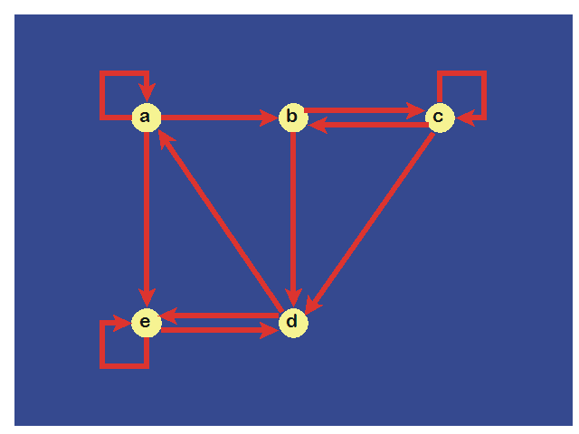
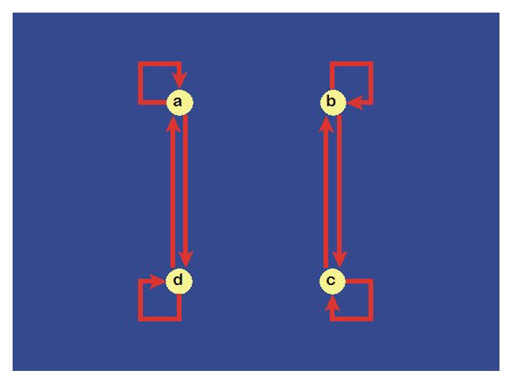
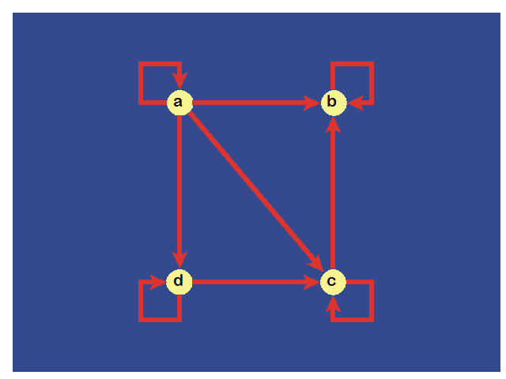

RELATIONS Homework
Total Points = 170
- (6 points) Given the relation R = { ( a, b ) | a divides b } on the set { 1, 2, 3, 4, 5, 6 }.
- List all the ordered pairs in the relation.
- Display this relation graphically.
- Display this relation in tabular form.
- (12 points)
Determine the following for the given relation R on the set { 1, 2, 3, 4, 5 } defined by the rule
( x, y ) ∈ R if and only if x = y – 1.
- List the elements of R.
- Find the domain of R.
- Find the range of R.
- List the elements of R-1.
- Find the domain of R-1.
- Find the range of R-1.
- (12 points)
Determine whether the relation R on the set of all people is reflexive, symmetric, antisymmetric, and/or
transitive where ( a, b ) ∈ R iff
| Relations: |
a. |
a is taller than b |
| b. |
a and b were born on the same day |
| c. |
a and b have a common grandparent |
- (8 points)
Let relation R = { ( 1, 2 ), ( 1, 3 ), ( 2, 3 ), ( 2, 4 ), ( 3, 1 ) } and relation
S = { ( 2, 1 ), ( 3, 1 ), ( 3, 2 ), (4, 2 ) }.
Find S ∘ R.
- (12 points)
Let relation R = { ( 1, 1 ), ( 1, 2 ), ( 1, 3 ), ( 2, 3 ), ( 2, 4 ), ( 3, 1 ), ( 3, 4 ), ( 3, 5 ), ( 4, 2 ),
( 4, 5 ), ( 5, 1 ), ( 5, 2 ), (5, 4 ) } on the set { 1, 2, 3, 4, 5 }.
Find R2 (i.e., R o R), R3, R4, R5.
- (12 points)
Determine the matrix representation and digraphs for the following relations on { 1, 2, 3 }.
| a. |
{ ( 1, 1 ), ( 1, 3 ), ( 2, 2 ), ( 3, 1 ), ( 3, 3 ) } |
| b. |
{ ( 1, 2 ), ( 2, 2 ), ( 3, 2 ) } |
| c. |
{ ( 1, 1 ), ( 1, 2 ), ( 1, 3 ), ( 2, 1 ), ( 2, 3 ), ( 3, 1 ), ( 3, 2 ), ( 3, 3 ) } |
- (8 points)
Given relation R = { ( a, a ), ( a, b ), ( b, c ), ( c, a ) }.
Determine the reflexive closure digraph from the digraph representing R.
Determine the symmetric closure digraph from the digraph representing R.
- (12 points)
Given digraph

determine which sequences of vertices form a path in this digraph.
Justify your answer if the sequence does not form a path.
| Sequences: |
a. |
a, b, c, d |
| b. |
b, d, c, b, d |
| c. |
a, a, b, d, e, d |
| d. |
b, c, d, e, a, a, b |
| e. |
b, c, c, b, d, e, d, e |
| f. |
a, a, b, b, c, c, b, d, e |
- (16 points)
Prove that the relation R on the set of ordered pairs of positive integers such that
( ( a, b), ( c, d ) ) ∈ R iff ad = bc is an equivalence relation.
- (16 points) Determine if the relation R with the given digraph is an equivalence relation.

- (16 points) Determine if the relation R with the given digraph is a poset.

- (24 points) Consider the poset R = ( { 2, 4, 6, 9, 12, 18, 27, 36, 48, 60, 72 }, | ).
- Draw the Hasse diagram.
- Find the maximal elements.
- Find the minimal elements.
- Is there a greatest element?
- Is there a least element?
- Find all the upper bound of { 2, 9 }.
- Find the least upper bound of { 2, 9 }, if it exists.
- Find all the lower bounds of { 60, 72 }.
- Find the greatest lower bound of { 60, 72 }, if it exists.
- Find a compatible total order.
- (16 points) Determine whether these posets are lattices.
- ( { 1, 3, 6, 9, 12 }, | )
- ( { 1, 5, 25, 125 }, | )
- ( { Z }, ≥ )
- ( Þ( S ), ⊆ )
Solutions to Homework on Relations
(to be posted after the due date)
© 2002-09-13 rcm27 ; last update
2021-05-15 21:16